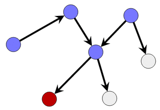

Lösning
Ett naivt sätt att lösa uppgiften är att testa för varje cirkel om det finns ett sätt att gå till den röda cirkeln.
Ett smartare sätt att lösa uppgiften är at utgå från den röda cirkeln och följa pilarna i omvänd riktning

Ett naivt sätt att lösa ämnet är att testa för varje cirkel om det finns ett sätt att gå till var och en av de två röda cirklarna.
Ett smartare sätt att lösa problemet är att först inse att man med nödvändighet måste passera genom mittcirkeln (den blå cirkeln i mitten). Därefter följer du bara pilarna i omvänd riktning från denna centrala cirkel.

Vi kan förenkla problemet genom att studera den allmänna strukturen i figuren. Om de cirklar i mitten avlägsnas som är värdelösa, och om vi "komprimerar" grupper om 4 noder belägna på var och en av de fyra kanterna, så reduceras ursprungsproblemet till ett såpass litet problem att det är relativt lätt att identifiera cirklarna som ger tillgång till de 4 röda noderna.

De svarta pilarna i den förenklade figuren ovan motsvarar de gröna vägarna i den ursprungliga bilden nedan:

Vi kan sedan återvända till ursprungsproblemet och fråga vilka cirklar som återstår att färga blåa. Vi kan då, precis som i de lättare versionerna, följa pilarna i omvänd riktning från de blåmarkerade cirklarna. För om en pil börjar från en ofärgad cirkel och pekar på en blå cirkel, så kan vi även färga den ofärgade cirkeln blå, eftersom vi kan gå från denna till den blå cirkeln med hjälp av pilen och därifrån vidare till alla röda cirklar (det var ju därför vi hade färgat den blå).
Med andra ord upprepar vi alltså följande procedur: För varje ofärgad cirkel letar vi efter en pil till en blå cirkel. Om så är fallet färgar vi den cirkeln blå (och vi kan också färga motsvarande pil grön). Annars letar vi efter en annan grå cirkel. Vi upprepar processen tills vi inte längre kan färga någon cirkel, och då avslutar vi.

Det är datavetenskap!
Cirklar och pilar representerar en mycket frekvent struktur i datavetenskap, kallad graf . Grafer kan beskriva konkreta strukturer, såsom vägnät eller datornät. De kan också beskriva abstrakta strukturer, som ett socialt nätverk där varje cirkel representerar en person och varje pil representerar det faktum att någon följer någon annans nyhetsflöde.
Den här uppgiften handlar om egenskapen nåbarhet : vilka är de cirklar från vilka du kan nå en uppsättning andra cirklar. Det finns effektiva algoritmer som tillåter datorer att fullt ut svara på denna fråga och behandla fall med miljarder cirklar och pilar.